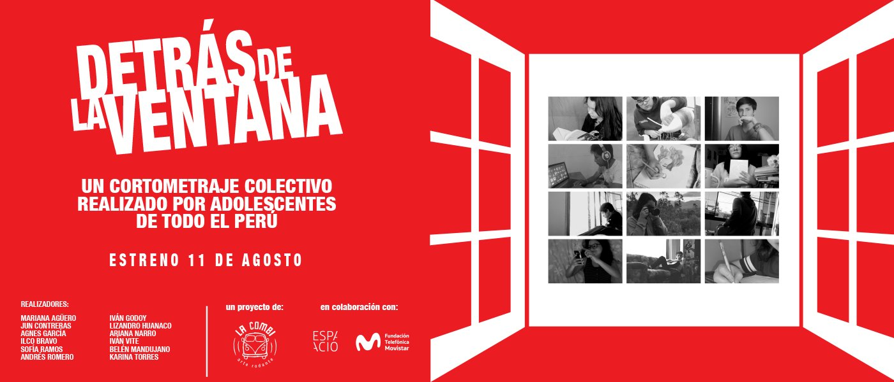

Reto Imagina
18 voces por un Perú. Durante la pandemia, adolescentes de 14 a 18 años de la costa, la sierra y la selva se conectaron desde sus casas para reflexionar sobre lo vivido en la cuarentena, imaginar cómo (re)construir el país y crear juntos un cortometraje.

Detrás de la ventana
El resultado del Reto: un cortometraje colectivo realizado a distancia por adolescentes de todo el Perú, cada uno desde su ventana, con sus lugares, su música y sus lenguas, subtituladas al castellano.
En un taller virtual de ocho sesiones, con asesorías personalizadas, aprendieron las etapas de creación de una obra audiovisual y exploraron el dibujo, la fotografía, el chroma key y la animación stop motion con materiales de sus propias regiones.
Los participantes llegaron a través de la red de colectivos y festivales con los que trabajamos en todo el país, como la Escuela de Cine Amazónico de Ucayali, el Festival Nacional de Cine de Huánuco, Sacha Cine de Iquitos, Mi Primer Festival de Lima o el Festival Internacional de Animación AJAYU.
- Mariana Agüero
- Jun Contreras
- Agnes García
- Ilco Bravo
- Sofía Ramos
- Andrés Romero
- Iván Godoy
- Lizandro Huanaco
- Ariana Narro
- Iván Vite
- Belén Mandujano
- Karina Torres
Un proyecto de La Combi · arte rodante, en colaboración con Espacio Fundación Telefónica Movistar.